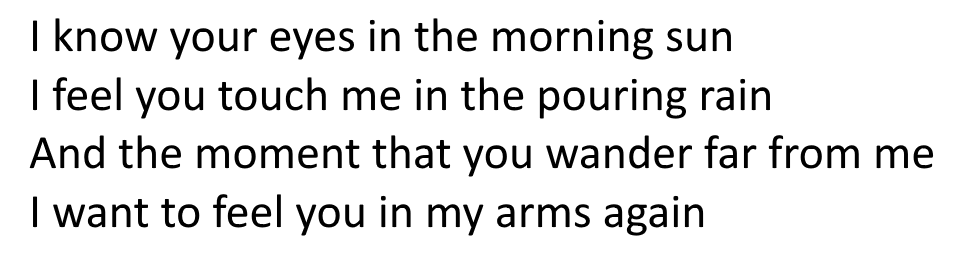
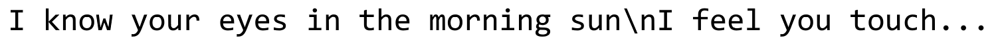
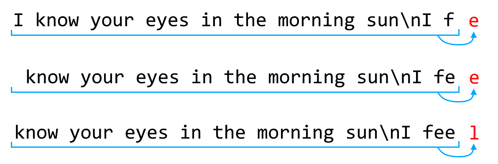

Note: I originally wrote this post for the Mango Solutions blog, and they have kindly allowed me to repost it here alongside the rest of my work. You can find the original post here!
Songwriting is a very mysterious process. It feels like creating something from nothing. It’s something I don’t feel like I really control.
– Tracy Chapman
It is February. The shortest, coldest, wettest, miserablest month of the British year.
Only two things happen in Britain during February. For a single evening, the people refrain from dipping all their food in batter and deep-frying it, and instead save some time by pouring the batter straight into a frying pan and eating it by itself; and for an entire day, the exchange of modest indications of affection between consenting adults is permitted, although the government advises against significant deviation from the actions specified in the state-issued Approved Romantic Gestures Handbook.
In Section 8.4 (Guidelines for Pre-Marital Communication) the following suggestion is made:
“Written expressions of emotion should be avoided where possible. Should it become absolutely necessary to express emotion in a written format, it should be limited to a ‘popular’ form of romantic lyricism. Examples of such ‘popular’ forms include ‘love poem’ and ‘love song’.
Thankfully, for those who have not achieved at least a master’s degree in a related field, writing a poem or song is a virtually impossible task. And following the sustained and highly successful effort to persuade the British youth that a career in the arts is a fast-track to unemployment, the number of applications to study non-STEM subjects at British universities has been falling consistently since the turn of the decade. This ensures that only the very best and most talented songwriters, producing the most creatively ingenuous work, are able to achieve widespread recognition, and therefore the British public are only exposed to high-quality creative influences.
But to us scientists, the lack of method is disturbing. This “creativity” must have a rational explanation. There must be some pattern.
This is unquestionably a problem which can be solved by machine learning, so let’s take the most obvious approach we can: we’ll train a recurrent neural network to generate song lyrics character by character.
You write down a paragraph or two describing several different subjects creating a kind of story ingredients-list, I suppose, and then cut the sentences into four or five-word sections; mix ’em up and reconnect them. You can get some pretty interesting idea combinations like this. You can use them as is or, if you have a craven need to not lose control, bounce off these ideas and write whole new sections.
– David Bowie
To build our neural network I’m going to be using the Keras machine learning interface (which we’re very excited about here at Mango right now - keep an eye out for workshops in the near future!). I’ve largely followed the steps in this example from the Keras for R website, and I’m going to stick to a high-level description of what’s going on, but if you’re the sort of person who would rather dive head-first into the code, don’t feel like you have to hang around here - go ahead and have a play! And if you want to read more about RNNs, this excellent post by Andrej Kaparthy is at least as entertaining and significantly more informative than the one you’re currently reading.
We start by scraping as many love song lyrics as possible from the web - these will form our training material. Here’s the sort of thing we’re talking about:

Well… that’s how they look to us. Actually, after a bit of preprocessing, the computer sees something more like this:

All line breaks are represented by the pair of characters “\n”, and so all the lyrics from all the songs are squashed down into one big long string.
Then we use this string to train the network. We show the network a section of the string, and tell it what comes next.

So the network gradually learns which characters tend to follow a given fixed-length “sentence”. The more of these what-comes-next examples it sees, the better it gets at correctly guessing what should follow any sentence we feed in.
At this point, our network is like a loyal student of a great artist, dutifully copying every brushstroke in minuscule detail and receiving a slap on the wrist and a barked correction every time it slips up. Via this process it appears to have done two things.
Firstly, it seems to have developed an understanding of the “rules” of writing a song. These rules are complex and multi-levelled; the network first had to learn the rules of English spelling and grammar, before it could start to make decisions about when to move to a new line or which rhyming pattern to use.
(Of course, it hasn’t actually “developed an understanding” of these rules. It has no idea what a “word” is, or a “new line”. It just knows that every few characters it should guess " ", and then sometimes it should put in a "\", and whenever it puts in a "\" then it’s got to follow that up with a "n" and then immediately a capital letter. Easy peasy.)
Secondly, and in exactly the same way, the network will have picked up some of the style of the work it is copying. If we were training it on the songs one specific artist, it would have learned to imitate the style of that particular artist - but we’ve gone one better than that and trained it on all the love songs we could find. So effectively, it’s learned how everyone else writes love songs.
But no-one gets famous by writing songs which have already been written. What we need now is some creativity, some passion, a little bit of je ne sais quoi.
Let’s stop telling our network what comes next. Let’s give it the freedom to write whatever it likes.
I don’t think you can ever do your best. Doing your best is a process of trying to do your best.
– Townes van Zandt
It’s interesting to look at the songwriting attempts of the network in the very early stages of training. At first, it is guessing more or less at random what character should come next, so we end up with semi-structured gobbledegook:
fameliawmalYaws. Boflyi, methabeethirts yt
play3mppioty2=ytrnfuunuiYs blllstis
Byyovcecrowth andtpazo's youltpuduc,s Ijd"a]bemob8b>fiume,;Co
Bliovlkfrenuyione (ju'te,'ve ru t Kis
go arLUUs,k'CaufkfR )s'xCvectdvoldes
4So
Avanrvous Ist'dyMe DolririBut notice that even in that example, which was taken from a very early training stage, the network has already nailed the “\n” newline combo and has even started to pick up on other consistent structural patterns like closing a “(” with a “)”. Actually, the jumbled nonsense becomes coherent English (or English-esque) ramblings quite quickly.
There is one interesting parameter to adjust when we ask the model to produce some output: the “diversity” parameter, which determines how adventurous the network should be in its choice of character. The higher we set this parameter, the more the network will favour slightly-less-probable characters over the most obvious choice at each point.
If we set the diversity parameter too low, we often degenerate into uncontrolled bursts of la-ing:
la la la la la la la la la la la la la la la la la la la la la la la la la la la la la la la la la la la la la la la la la la
la la la la la la la la la la la la la la la la la la la la la la la la la la la la la la la la la la la la la la la la la la la la la la la la la
la la la la la la la la la la la la la la la la la la la la la la la la la la la la la la la la
(... lots more "la"s)But set it too high and the network decides dictionary English is too limiting.
Oh, this younan every, drock on
Scridh's tty'
Is go only ealled
You could have like the one don'm I dope
Love me
And woment while you all that
Was it statiinc. I living you must?
We dirls anythorIt’s difficult to find the write balance between syllabic repetition and progressive vocabulary, and there’s a surprisingly fine line between the two - this will probably prove to be a fruitful area for further academic research.
I think that identifying the optimal diversity parameter is probably the key to good songwriting.
Songwriting is like editing. You write down all this stuff - all this bad, stupid stuff - and then you have to get rid of everything except the very best.
– Juliana Hatfield
Here are some particularly “beautiful” passages taken from the great amount of (largely poor) material the model produced. I haven’t done any editing other than to isolate a few consecutive lines at a time and in the last few examples, to start the network off with certain sentences. Wishing you a Happy Valentine’s Day!
I want to do the trute
I want to do and I don't want it to love you
I want to work around
And the world we can stay the sun
And the sky is a wind a time
I won't never need a love
And I Mister the sunshine that I was to be with you
I need you
I want to wanna learn a river
And I want you to stand in the sun
I need you and I want you and I can stay away
I wonder the stars the stars the smile
And I wonder the ones of my life
I was the litter more
And I was the sun
She too moment we can tell my life
I can't be when I wanted to leave it all
I wonder the light and the stars the sun
And I can still let me love me
I can still let me love me
I want to fall a lover your love
I want to fall in love
I want to see your eyes
I must find a believer to say
But where ain't all about you
I must have to make to meet to leare
I must have to think of you
I would never knows, don't make to love you
That she cry
And I could always find your sunchin' starter
What's enough the hold my way you can stall
A darly love my heart I don't know
And I must have to mean to me
I'm so time now
I know your eyes in the morning sun
I feel the name of love
Love is a picked the sun
All my life I can make me wanna be with you
I just give up in your head
And I can stay that you want a life
I've stay the more than I do
How long will I love you
As long as there is that songs
All the things that you want to find you
I could say me true
I want to fall in love with you
I want my life
And you're so sweet
When I see you wanted to that for you
I can see you and thing, baby
I wanna be alone
Oh yeah I tell you somethin'
I think you'll understand
When I say that somethin'
I thought the dartion hyand
I want me way to hear
All the things what you do
Wise men say
Only fools rush in
But I can hear your love
And I don't wanna be alone
If I should stay
I would only be in your head
I wanna know that I hope I see the sun
I want a best there for me too
I just see that I can have beautiful
So hold me to you